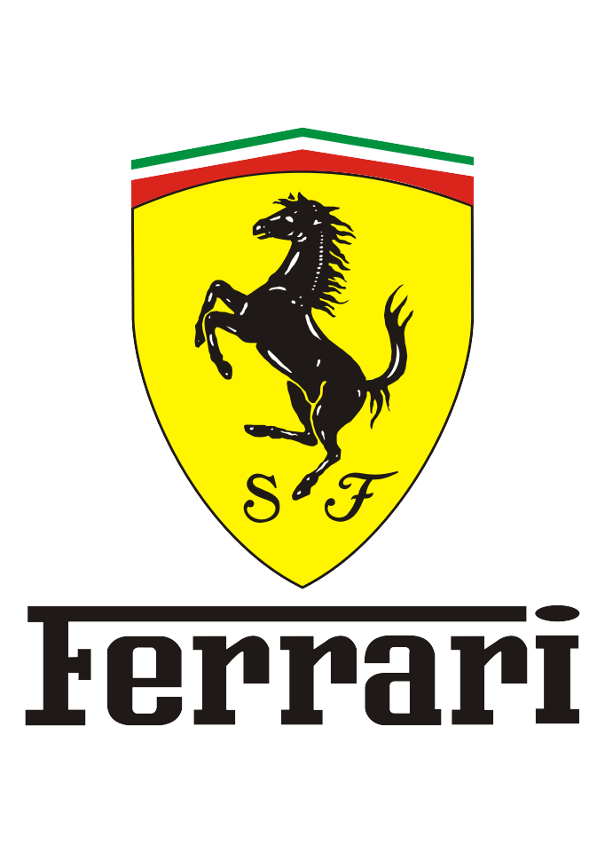

|
Welcome: |
Purosangue Rampante! Ferrari is the embodiment of Italian passion, performance, and prestige. Founded by Enzo Ferrari in 1947, the brand has become a global icon through its relentless pursuit of speed and beauty. From the roar of its engines on Formula 1 circuits to the elegance of its road cars, every Ferrari is a fusion of cutting-edge engineering and timeless design — a symbol of excellence that inspires drivers and enthusiasts around the world. Ferrari F355: A Symphony of Speed and Style 
The iconic Ferrari F355. Draped in sleek bodywork and roaring with a 3.5-liter V8, this machine distills pure racing heritage into every curve and corner. It’s a study in precision, a sonic boom on four wheels, and an attitude you can’t ignore. Buyers wanting the full racing experience could specify a Fiorano chassis upgrade package for still sharper handling, and a cutting-edge F1-style gearbox was available from 1997. It was Ferrari’s first semi-automatic gearbox and one that transferred expertise from the F1-89 Formula 1 car for either snappy manual shifts via the paddleshifters or the convenience of a full automatic transmission. Either way, the driver’s hands could always be on the wheel. The choice of gearbox even changed the car’s name – F355 for manual models, 355 F1 for semi-automatics. Every rev of this beast is an unapologetic challenge to the status quo. With razor-sharp agility and a soundtrack that rattles your soul, the F355 isn’t just a car—it’s a rebellious anthem for anyone who dares to tame 380 horsepower. Strap in, grip the wheel, and let the legend take you beyond the limits. Ferrari F300: Precision on the Grand Prix Stage 
Enter the Ferrari F300 — a purebred Formula 1 monster that tore through the 1998 season with raw power and relentless ambition. Designed by Rory Byrne and the Scuderia dream team, this car was Ferrari’s answer to the new era of F1: narrower tracks, grooved tires, and aerodynamic warfare.
Under the hood? A screaming 3.0-liter Tipo 047 V10 engine pushing over 800 horsepower at 17,500 rpm. That’s not just fast — that’s warp speed. With a seven-speed semi-automatic gearbox and a carbon-fiber chassis tuned for precision, the F300 was built to dominate. Michael Schumacher piloted this beast to six victories that season — Argentina, Canada, France, Great Britain, Hungary, and Italy — battling Mika Häkkinen in one of the fiercest rivalries of the decade. Though the championship slipped away in Suzuka, the F300 laid the groundwork for Ferrari’s future reign. This isn’t just a car. It’s a statement. A red blur of fury and finesse. A symbol of what happens when engineering meets obsession. The F300 didn’t just race — it roared, it rebelled, and it rewrote the rules. Ferrari F50:The Pinnacle of Raw Performance
The Ferrari F50 wasn’t just a car — it was a declaration. Released in 1995 to celebrate Ferrari’s 50th anniversary, this beast fused Formula 1 tech with street-legal madness. No turbos, no compromises. Just a naturally aspirated 4.7-liter V12 derived straight from the 1990 Ferrari 641 F1 car. With 513 horsepower screaming at 8,500 rpm, a carbon-fiber monocoque chassis, and push-rod suspension straight out of the Grand Prix playbook, the F50 was built for purists. No power steering. No ABS. No fluff. Just raw, analog performance that demanded respect — and delivered thrills. Only 349 units were made, making it rarer than its predecessor, the F40. And unlike anything else on the road, the F50’s radical design by Pininfarina featured a targa top, exposed rear wing, and curves that looked fast even standing still. This wasn’t just Ferrari flexing — it was Ferrari unleashing. The F50 is what happens when you take 50 years of racing obsession and distill it into one unapologetic machine. A supercar that doesn’t ask for permission. It just goes. Ferrari 456 GT:Grand Touring Elegance in Motion
The Ferrari 456 GT was a grand tourer that redefined luxury and performance in the '90s. Launched in 1992, it combined the elegance of a four-seater with the heart of a true Ferrari. Under its sleek hood lay a 5.5-liter V12 engine, producing 436 horsepower and propelling this beauty from 0 to 60 mph in just 5.6 seconds. Designed by Pininfarina, the 456 GT featured a long hood, short rear deck, and a distinctive fastback silhouette that screamed sophistication. Inside, it was pure opulence: leather upholstery, wood trim, and a driver-focused cockpit that made every journey feel special. But don’t let its luxury fool you — the 456 GT was built for speed. With a top speed of over 180 mph, it was as comfortable on the Autobahn as it was cruising through the countryside. This wasn’t just a car; it was an experience, blending Ferrari’s racing DNA with everyday usability. |